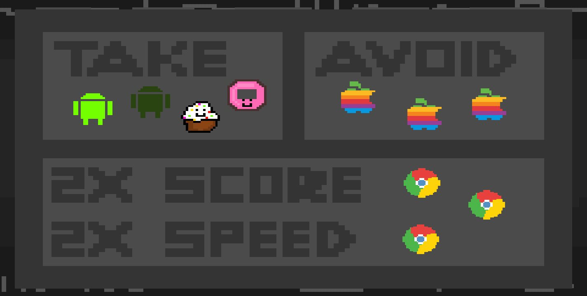
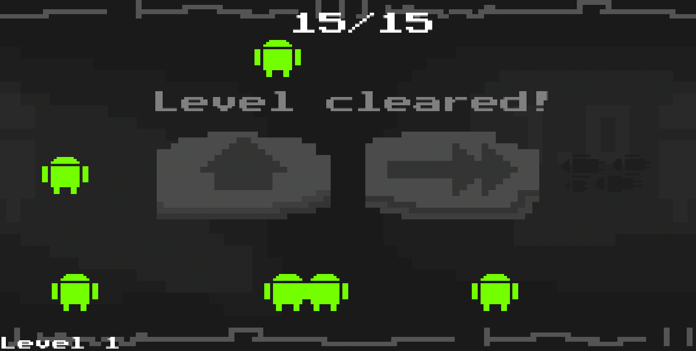
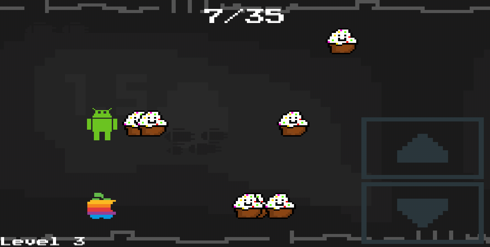
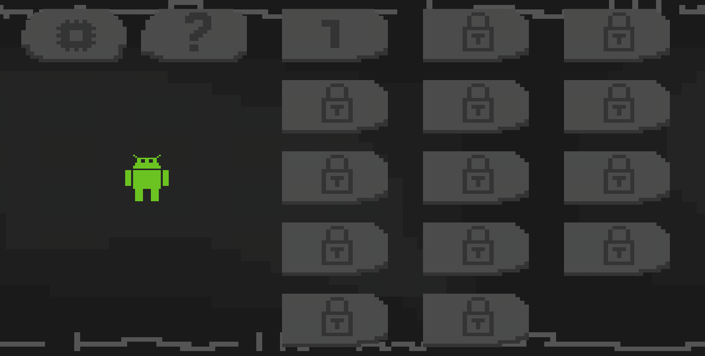
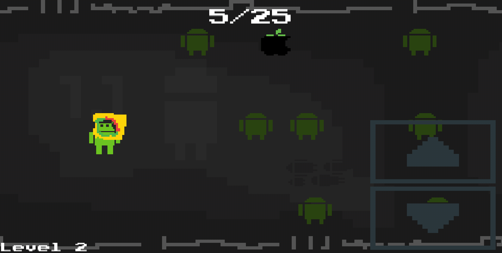
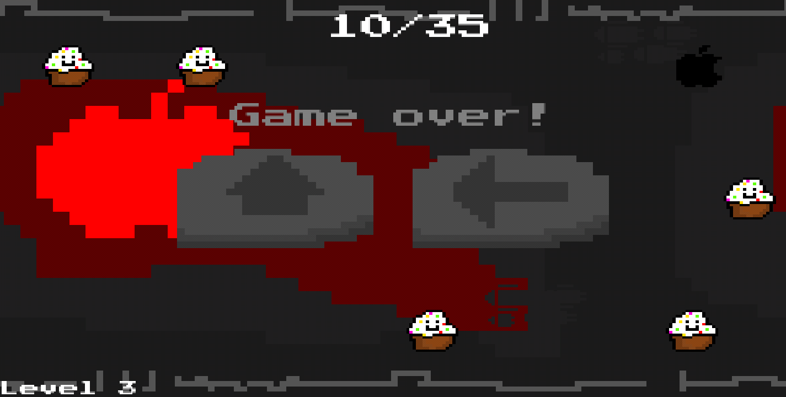

 |
 |
 |
 |
 |
 |
Bugdroid Runner is a side-scrolling survival game, travel across three rows while avoiding Apple's classic six-color logo. 
Power-ups include Bugdroid-shaped extra lives, Chrome score-speed multipliers, cupcakes, and donuts. There is a total of 14 levels.
View original Google Play Store synopsis
Bugdroid Runner is all about the history of the #1 mobile operating system. Travel through the timeline of the Android operating system in an arcade-type game with retro elements. The main goal of the game is to reach the most recent update of Android without getting caught by the evil Apple. If you love Android, you will love this game.
The game was written in the java framework LibGdx which is based on LWJGL.
- ID: com.cedrikaagaard.bugdroidrunner
- First Publish Date: December 1, 2016
- Last Publish Date: Dec 25, 2016
- Latest Version: 1.2